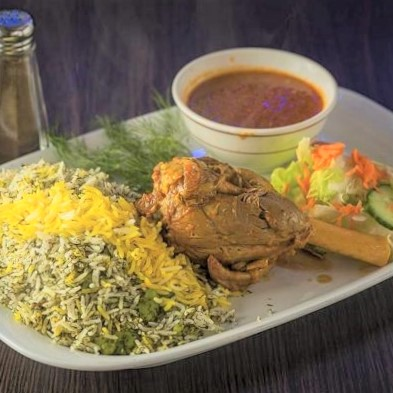

Baghali Polo Ba Mahiche
INGREDIENTS
- 2 pieces Lamb shanks
- 2 Medium onions diced in silvered shape
- 2 cloves Garlic diced in small pieces
- Salt as much as required
- Turmeric as much as required
- Pepper as much as required
- Brewed saffron as much as required
- 1 Cinnamon stick
- Oil as much as required
- 2 units Rice
- 1 unit Broad beans
- 1 unit Fresh dill chopped finely
- Brewed saffron as much as required
- Melted butter as much as required
- Bread or lettuce or carrots for the Tahdig

INSTRUCTIONS
- At first, you need to wash and clean the lamb shank and let the extra water comes out. Then pick
a
suitable pot and grease it with oil. Put the pot on the flame and heat the oil. Then put the
half of
the
silvered chopped onions into the pot. Stir and fry the onions to have them soft and golden.
Place
the
Mahiche (lamb shanks) into the pot and fry them, remember to flip the shanks in order to have
both
sides
fried and cooked.
- Now add the remaining half of the silvered onions and also the garlic, pepper, turmeric,
cinnamon
stick
and brewed saffron to the pot and stir the ingredients. Let the fragrance take over the house.
Put
the
lid of the pot on it and let it cook for about 3hours. The flame must be too low and it should
be
cooked
gradually. Be careful not to stir the shanks, because the onions might go beneath it and burn.
- After 3 hour, when the juice is too condensed add the salt to the lamb shanks. Flip the shanks
and
let
them cook for another 1 hour and half
- Wash the rice with semi warm water and soak it for 2 hours with 2 teasp of salt.
- Clean the broad beans and peel them. Then split them and wash again, let them soak for hours.
Then
cook
them in a pot with some water for about 5 minutes. Remove the foam of the surface with a spoon.
Rinse
the beans and put them aside.
- Bring a pot full of water to the boil. Then add the rice to it and let it cook for 3 minutes.
Then
add
the cooked broad beans to the boiling water and rice, also add the fresh and finely chopped
dills to
the
content and stir them properly. When the rice is ready, rinse the content, wash the pot and let
it
dry.
- Then grease the pot and put it back on the flame. Cover the bottom surface of the pot with
desirable
tahdig making ingredients (you can place a layer of bread, carrots or lettuce).Put the rice
ingredients
in the pot and make it seem like a mountain, also make some holes in the rice mountain. Add some
oil
and
water to the rice and put the lid of the pot back on it. Remember to cover the lid by a napkin
(damkoni). Reduce the heat and let it steam for 30 to 45 minutes.
- When the rice has steamed, mix a little bit of it by brewed saffron and serve the rice in a dish
while
garnishing it by the saffron rice. Remove the cinnamon stick from the Mahiche (shank) and serve
it
in
another dish. Your fabulous Baghali Polo Ba Mahiche in a very Persian traditional style is
ready!